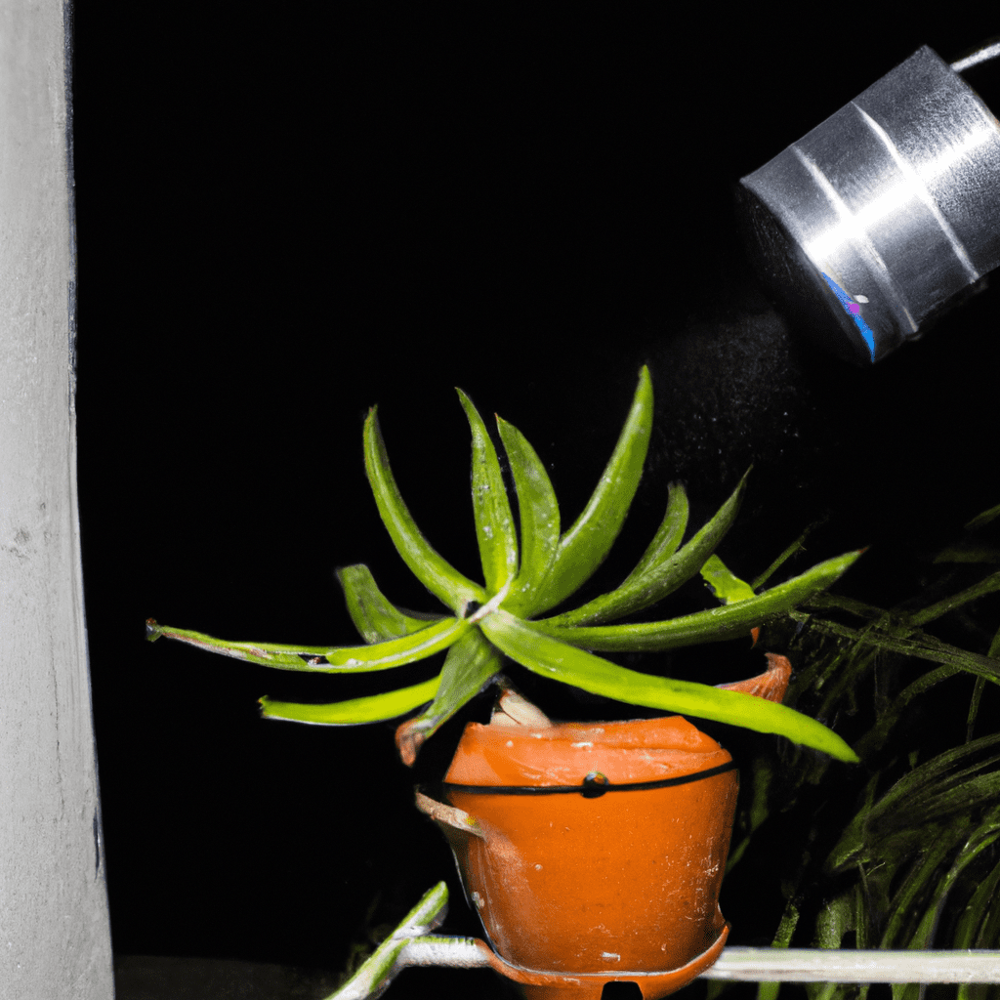

¿Qué es el cuidado de áreas verdes?
El cuidado de las áreas verdes es como cuidar de un jardín gigante! Involucra mantener y preservar los espacios con vegetación, ya sea en parques, jardines públicos o incluso en tu propio patio.
¿Cómo podemos cuidar estas áreas?
ParkPlantar árboles en las áreas verdes
Sembrar más plantas en las áreas verdes, sembrar continuamente es muy beneficioso, ya que es una de las mejores actividades para que la comunidad comience a crear conciencia ambiental y que todos aprendan a cómo cuidar las áreas verdes.
Además, absorbe 2.900 galones de agua de lluvia, filtra 28 kg de contaminación atmosférica, hogar de pequeños animales, puede bajar la temperatura del aire entre 2 °C y 8 °C, retienen agua de lluvia permitiendo que se filtre a los acuíferos, absorben el CO2 del ambiente y los transforma

DeleteNo tirar basura en las áreas verdes
Aunque suene como algo que se entiende y no se debería ni mencionar, es una de las actividades más sencillas y útiles que puedes hacer para proteger las áreas verdes.
Lamentablemente en nuestro país todos hemos visto basura en las areas verdes en parques o jardines. Puede que en tu escuela muchos de tus compañeros tiren su basura sin importarles, pero recuerda que tu puedes ser el que actúe correctamente a pesar de lo que hagan los otros.

Disabled_By_DefaultRespetar los pasos restringidos de las zonas verdes
Evita pasar por las zonas verdes urbanas de tu comunidad que cuentan con alguna restricción. En la mayoría de casos, no permiten el paso por ahí, ya que hay plantas a las que puedes causarles algún daño más fácilmente.
Todas las áreas verdes para niños y adultos tienen zonas para que puedas caminar y sentarte sin deteriorarlas. Respeta las delimitaciones, aunque tengas que caminar un poco más para llegar a tu destino.

PetsLevantar las heces de nuestras mascotas
Levantar las heces de las mascotas es importante por varias razones. En primer lugar, es un gesto de responsabilidad y respeto hacia la comunidad y el medio ambiente. Las heces de mascotas contienen bacterias y parásitos que pueden ser perjudiciales para la salud humana y para otros animales si entran en contacto con ellas.

Potted_PlantRegar y hacer mantenimiento de las áreas verdes
Una buena idea para ahorrar agua y optimizar la absorción de agua es regar las plantas de noche, debido a que el agua no se evapora como en el día y la planta absorberá toda el agua que le eches a diferencia de cuando la riegas durante el día.

De acuerdo a la Organización Mundial de la Salud (OMS), se requieren de al menos 16m2 de áreas verdes por habitante para garantizar su bienestar. Actualmente, en las ciudades, se tienen 5m2, lo que está muy por debajo de lo recomendado por la OMS.
La contaminación atmosférica se refiere a la presencia en el aire de sustancias nocivas en cantidades que pueden ser perjudiciales para la salud humana, animal o vegetal, o que pueden dañar materiales y afectar el medio ambiente.
Inicio